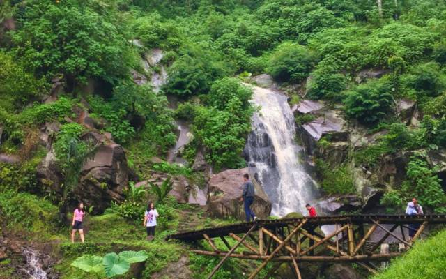
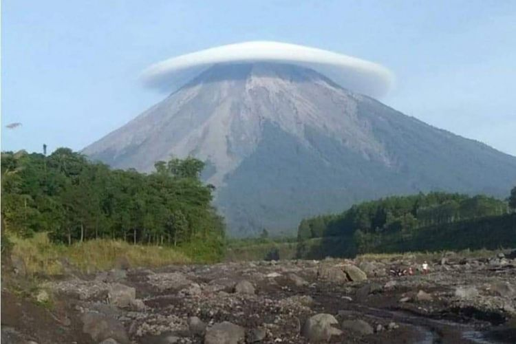

Coban Rondo
Air Terjun Coban Rondo merupakan air terjun yang terletak di Kecamatan Pujon, Kota Batu, Kabupaten Malang, Jawa Timur. Air terjun ini mudah dijangkau oleh kendaraan umum. Akses yang paling mudah adalah melalui jalan raya dari Malang ke Batu dari sebelah timur atau dari Kediri ke Pare menuju Malang dari arah barat. Sumber: Wikipedia

Coban Rais
Air terjun Coban Rais merupakan air terjun yang berlokasi di Desa oro-oro Ombo, Kota Batu. Akses paling mudah menuju Coban Rais adalah melewati jalan raya menuju Batu Night Spectacular. Jalan menuju Coban Rais juga dilengkapi dengan petunjuk jalan. Sumber: Wikipedia
Gunung Semeru
Rute perjalanan Info Wisata Gunung Semeru di Jawa Timur: Rute, Harga Tiket, dan TipsIlustrasi pendakian Semeru. instagram.com/mariabeatrce Kalau ingin memulai perjalanan menuju Gunung Semeru, ada baiknya berangkat dari Kota Malang. Berikut rute perjalanan yang bisa ditempuh menggunakan kendaraan pribadi. Dari Malang, melajulah menuju Tumpang, Poncokusumo, Gubuk Klakah, Ngadas, dan Ranu Pane. Perjalanan ini memakan waktu selama kurang lebih 3-4 jam. Rute yang bisa dilalui dengan menggunakan kendaraan umum. Dari Terminal Arjosari, gunakan angkot dengan kode TA menuju Pasar Tumpang. Setelah sampai di Tumpang, lanjutkan perjalanan menuju Ranu Pane dengan menyewa mobil jeep. Satu mobil jeep bisa mengantarkan 14 orang sekaligus, dengan harga Rp38 ribu per orang. Kamu juga bisa menyewa satu jeep sekaligus dengan ongkos Rp550 ribu.
